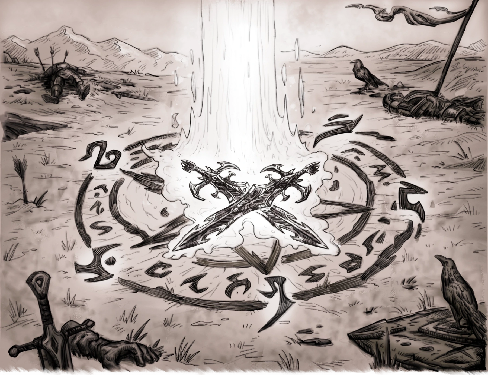

|
由于常年身处战火与纷争之中，战龙往往比其他巨龙更常被迫举行紧急的永恒之光仪式，以此从殊死决斗所留下的致命重创或其他恶疾中死里逃生。正因如此，在伤情评估断定别无活路之后，如何就地取材紧急完成仪式，几乎成了战龙群体中的一门独到绝活。我曾与多条永光战龙交谈，听闻了许多在仪式中随机应变、急中生智的惊人故事。有时，故事里那种山穷水尽的绝境令我震惊不已，不禁暗自思忖如此仓促的仪式成功几率何其渺茫……然而，那条永光龙却真真切切地站在我的面前。 那么，这究竟意味着什么呢？把这种反差单纯归咎于夸大其词或自我吹嘘固然轻巧省事。诚然，确实有不少永光战龙喜欢添油加醋地渲染自己的死里逃生，盼着能让自己的传奇事迹广为流传。但即便如此，若将这些故事一概打成夸张吹嘘与无稽轶闻，总让人觉得意犹未尽……这样的解释听起来未免太过苍白空洞。 相比之下，我认为真相更有可能是刻意夸张与另外两重因素共同作用的结果：其一是幸存者偏差，其二则是深埋在吹嘘与偏见底下、关乎永恒之光仪式本身的某种真实奥秘。幸存者偏差显而易见：任何能够活下来向我讲述经历的永光龙，其仪式必然取得了成功；因此我的走访调查很可能遗漏了大量在极其相似的绝境中同样鲁莽拼凑仪式、最终却惨遭失败的巨龙。但即便将这一切全都纳入考量，我依然相信其中存在着一粒隐匿的真相内核：要么是战龙身上存在着某种特质，使它们能够在战场绝境中以相当可观的成功率完成永恒之光仪式；要么就是仪式本身具备某种特性，能够顺应巨龙所处的境遇，因地制宜地为其提供渡过难关所需的一切。可一场仪式怎会具备这般能力？倘若它真能做到，又为何要这样做？难不成，这场仪式本身就“渴望”被举行吗？ ――永光贤者卡利赞德雷克斯 各血统永光战龙背景 |
 战龙与永恒之光仪式 |